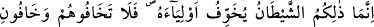
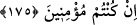

savaşa çıkmaları sâyesinde iki cihân saâdetini kazanmanın temel sebebi olan “Allah’ın
rızâsına uydular.” Bu cümle “geri döndüler” cümlesine mâtuftur. “Allah, büyük lütuf
sahibidir.” Çünkü, bu sahâbîleri sâbit-kadem kılarak; îmanlarını artırarak; cihada
koşmaya ve din konusunda celâdetli davranmaya ve düşman karşısında cesâret
göstermeye muvaffak kılarak, ayrıca büyük faydalar temîn edip her türlü kötülükten
koruyarak ihsânda bulunmuştur.
Bu ifadede, bu müslümanlarla sefere çıkmaktan geri duranların büyük pişmanlık
duymalarının gerektiği belirtilmekte, bu zatların kazandığı faydalardan kendilerini
mahrûm bıraktıkları için de görüşlerinin hatası ortaya konmaktadır.
Rivâyet edilir ki: Bu seferden geri kalanlar: “Böyle gazâ mı olur ki, Allah bunlara
gazâ sevabı vermiş ve bunlardan râzı olmuş olsun?” demişler.
175. İşte o şeytan, ancak kendi dostlarını korkutur. Şu halde, eğer îman etmiş
kimseler iseniz onlardan korkmayın, benden korkun.
Ey inananlar, “O” sizi seferden geri bırakan, şeytandır.
Şeytan, “ancak” münâfık “dostlarını” müşriklerle savaşmasınlar diye müşriklerin
kendilerine galip gelip mahvedeceğini söyleyerek “korkutur.” Şeytanın dostları,
kalplerinde hastalık olan münâfıklardır ki bunlar, Hz. Peygamber’le birlikte sefere
çıkmaktan geri kalmışlardır. Âyetin mânası şudur: Şeytanın kâfirlerle korkutması sadece
dostları münâfıklara etki eder. Siz ise -ey mü’minler- Allah’ın dostları ve dâimâ galip
gelen ordususunuz. Şeytanın korkutması sizi etkilemez.
“Eğer inanmış iseniz, onlardan,” yani şeytandan ve dostları olan Ebû Süfyân
Ordusu’ndan “korkmayın, benden” yani bana muhâlefet etmekten “korkun.”
İnanmışsanız, diyor çünkü îman, Allah korkusunu başka korkulara tercih etmeyi;
şeytanın ve dostlarının şerrinden emin olmayı gerektirir.
Korku üç kısımdır: Avâmın korkusu ki bu Allah’ın ceza vermesinden duyulan bir
korkudur. Havâssın korkusu ki bu da Allah’dan uzak olmaktan duyulan bir korkudur. Bir
de havâssu’l-havâssın korkusu vardır ki bu da, bizzat Allah’dan korkmaktır. Bu
mertebelere, Hz. Peygamber (s.a.) şu hadîs-i şerîfi ile işâret etmektedir: “Azabından,
affına; gazabından rızâna; Sen’den sana sığınırım.”[149] Bu durumda Allah yoluna
girene düşen, nefsini ve nefsânî sıfatlarını yok etmesi, kâinâtta O’nun varlığından başka
varlık görmemesi ve sadece O’ndan korkmasıdır. Çünkü, kulların üstünde kahredici
olan ve bütün her şeye yeten sadece O’dur.”
Necmüddin Kübrâ (k.s.) der ki: “Halillik (dostluk, sevgililik) makamının son
mertebesi, kişinin kendi nefsinin ve cemî mükevvenâtın işini dört tekbir ile yani cenâze